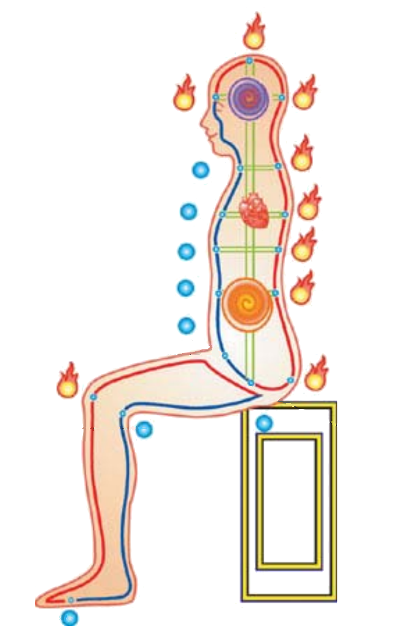
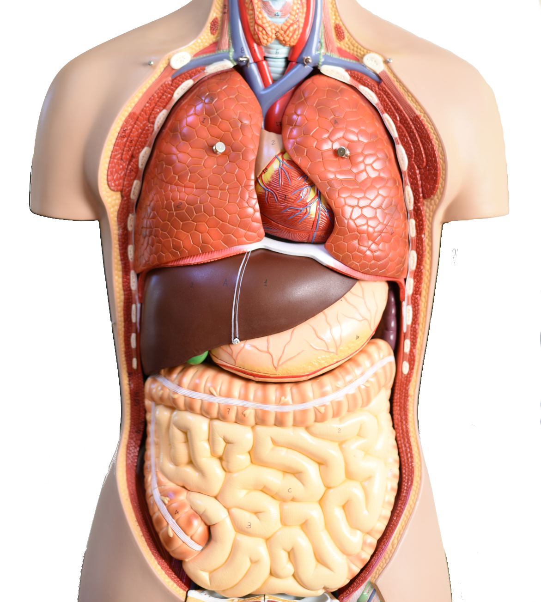

 There are many good meditation practices, and a particular type is inner meditation. Unlike some techniques that use music or imagination of external images to help meditating, inner meditation emphasizes focusing on internal parts of a human body, looking at them and listening to them, namely, concentrating inward on something, not outside. It applies few fundamental techniques in concert, which include breath, concentration, relaxation, body postures, and mental power to develop life energy, or qi. The development of qi inside one's body enhances overall wellness of health and leads to a path of spiritual enlightenment.
Bringing all attention inward will cause profound changes to our body and mind gradually. It develops a human's awareness. Being aware of internal states of the body and mind is of great power, because it represents the ability of transforming one's negative emotion to positive energy. When combined with conscious will power, the awareness itself is one of the most effective ways to cultivate life energy or qi; the qi in turns enhances the ability of being aware. Of course, it also has relatively well-known benefits that one can obtain through meditation such as heartsease and enhanced concentration power.
Several parts of the body play very important roles in inner meditation, and they are the places on which we concentrate our full attention. One place is the bottom of the torso, centered around the perineum, which is also a meridian point. A second place is the spine. A third place is the dan tian, also called the center of the body, which is located behind the navel or the belly button and close to the spine. Other places include the heart, the center of the brain, the top of the skull, and the central thrusting channel which goes up from the perineum to the top of the skull.
Not all of these places are used together at the beginning of practices. Basic practices normally involve the perineum, the spine, and the dan tian. Others are targets of more advanced practices.
Organs also play an important role in inner meditation because they are tightly connected to emotion and subtle psychological activities. The organs that we meditate about are the liver, heart, spleen, lungs, and kidneys.
Inner meditation has a broad range of practices, and we do not even attempt to present a comprehensive list of concrete methods. However, they do share some common characteristics which we discuss later.
In order to give a concrete picture of what an inner meditation practice may look like, this section describes one of the simplest but extremely powerful methods: the Yin Yang Breath. It roughly consists of the following steps:
Another example technique is the inner smile, which involves meditating about each organ mentioned above and transforms negative emotion into positive energy.
Please note: just like learning any body or mind related work it may not be beneficial or even risky if you learn on your own because you may not practice with the right form or technique. The most effective way of learning such skill is studying from an instructor in person, so that any inappropriate movements can be corrected promptly.
A series of inner meditation classes will be available at Arts Unity Movements Center every Saturday at 10am starting on December 3, 2016. The Event page has more information.
| Address: | 149 South Blvd, San Mateo, CA 94402 |
From above description, you might have observed that inner meditation starts with some basic body exercises such as breath, body postures, etc. assisted with a concentrated brain. This is exactly the case. Inner meditation regards a human body as the fundamental building material for higher level spiritual development. Mind activities including spiritual experience are also results of brain activities, and the brain is just an organ of our body which needs energy in order to function. When the brain has more energy, it works better and gives us more spiritual experience.
The way that inner meditation leads to spiritual development is cultivating life energy inside our body. The process starts with the bottom of the torso. When life energy is enhanced and preserved, it automatically goes up along the spine and other channels. Then we develop more energy in internal organs such as the heart and kidneys. Afterwards, it goes up again, and we move practice centers up too. At certain levels, it reaches the brain, and we also train our brain more to become aware of any subtle mind activities. With the highly charged life energy, the brain will open up itself and presents us spiritual experience that the brain never generates before including spiritual enlightenment.
In this framework of meditation, we can roughly draw a line between mastering practice techniques and starting to perceive that the life energy becomes strong enough at the bottom of the torso to move up. Before the line, a person needs to learn the basics and keep practicing them.